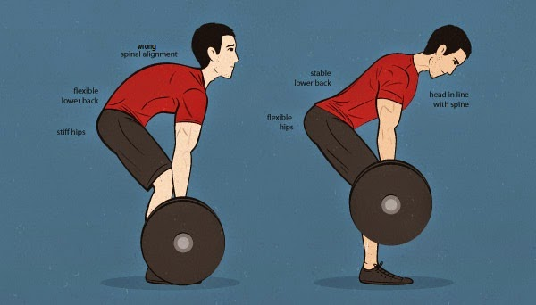
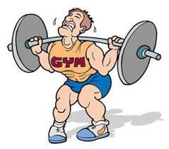
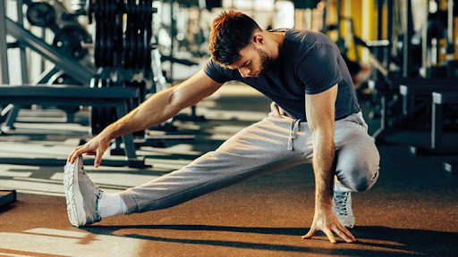

Ağırlık antrenmanları gücü ve genel sağlığı iyileştirmenin eğlenceli olduğu kadar etkili bir yoludur. Ancak herhangi bir fiziksel aktivitede, antrenmanlardan en iyi şekilde yararlanmak ve yaralanmaları önlemek için güvenliğe öncelik vermek önemlidir. İster amatör ister deneyimli bir fitness sporcusu olun güvenli ve etkili bir ağırlık antrenmanı için dikkat edilmesi gereken bazı noktalar bulunur. Güvenli şekilde spor yapmanızı sağlayacak ve veriminizi büyük oranda etkileyebilecek bu noktaları öğrenerek daha etkili çalışmak için okumaya devam edin.
Ağırlık Kaldırırken Nelere Dikkat Etmeliyiz?
Egzersiz, sağlığınız için yapabileceğiniz en önemli şeylerden biridir. Optimum sonuçlar için hem kardiyo hem de ağırlık çalışmasının bir karışımı yapılması önerilir. Kuvvet antrenmanı egzersizlerine başladığınız günlerde yaralanmalar veya sırt ağrıları yaşamanız olasıdır. Bu tip rahatsızlıkları önlerken aynı zamanda konforlu bir egzersiz programı uygulayarak sağlığınızı geliştirmeniz ve formunuzu sürdürmeniz mümkündür. Ağırlık kaldırırken alt ve üst ekstremiteleri güvende tutmanıza yardımcı olacak bazı uygulamalar bulunur.
Formunuza Dikkat Edin
Ağırlık kaldırırken formunuzu ve gücünüzü izlemek, yaralanmayı önlemek için yapabileceğiniz en önemli şeylerden biridir. Ne kaldırırsanız kaldırın, sırtınızı her zaman düz tutun. Kalçanızı bükerken de sırtınızın dik olmasına özen gösterin. Bu, göbek ve bacaklarınızdaki destekleyici kasları çalıştırmanıza yardımcı olarak yaralanma ve kas gerginliği riskini azaltır. Omuzlarınızın sarkmasına izin vermek, omurganızın eğri olmasına izin verir. Eğimli bir omurgaya sahip herhangi bir şeyi kaldırdığınızda, kaslarınızı ve omurlarınızı zorlarsınız. Kendi formunuzu izlemek konusunda rahat değilseniz, bir arkadaşınızla egzersiz yapın veya kişisel bir antrenörle bir seans planlayın.
Nefes Almayı Unutmayın
Ağırlık kaldırma sırasında farkında olmadan veya bilinçli olarak nefesinizi tutuyor olabilirsiniz. Bu refleks, kaldırılan ağırlığın daha etkili olduğunu ve daha yüksek ağırlıklarla çalışabileceğinizi hissettirebilir. Nefesi tutmak antrenmana yardımcı olmak yerine kasların doğru şekilde çalışmasını önler. Ağırlık kaldırırken kısa süreli de olsa nefes almayı bırakmak kasların gerilmesine neden olur, sıkılan kaslar zorlanmaya ve yaralanmaya karşı daha savunmasız hale gelir. Ağırlık kaldırırken nefes verin, indirirken tekrar alın. Bu nefes alma döngüsü kaslarınızı almaları gereken oksijenden mahrum bırakmadan egzersizinizden en iyi şekilde yararlanmanıza yardımcı olur.
Daha Küçük Ağırlıklarla Başlayın
Yüksek ağırlıkları kaldırmak her zaman için daha güçlü olduğunuz anlamına gelmeyebilir. Gücün odak noktası sırttır ve bu bölgeyi dayanıklı hale getirmek zaman alır. Sınırları zorlamak yerine başlangıçta daha hafif ağırlıklar kaldırarak tekrar aralıklarını sıklaştırmak, kaslarınızı daha fazla gerilme riski olmadan çalıştırabilmenin bir yoludur. Zamanla ve kaldırırken iyi bir formda ustalaştıktan sonra ağırlıkları artırmaya başlayabilirsiniz. Böylelikle sırtınızı güvende tutarak yaralanma nedeniyle ara vermek zorunda kalmadan düzenli olarak çalışmaya devam edebilirsiniz.
Acı Hissediyorsanız Bırakın
Başarılı bir egzersiz rutininin anahtarı, vücudunuzun size söylediklerini dinlemektir. Bazen acıya rağmen değil acı hissettiğinizde bırakmak ve nedenine bakmak güvenli şekilde egzersiz yapmanın bir yoludur. Başarılı bir egzersiz rutininin anahtarı, vücudunuzun size söylediklerini dinlemektir. Acıtıyorsa, yaptığınız şeyi bırakın ve ne olduğunu değerlendirin.
Hedefinize ve Vücudunuza Uygun Ağırlığı Nasıl Seçersiniz?
Ağırlık kaldırma söz konusu olduğunda, belirli hedeflerinize ve vücudunuza uygun ağırlıkları seçmek önemlidir. Bunun nedeni, doğru ağırlığın yaralanma riskini azaltırken istediğiniz sonuçları elde etmenize yardımcı olabilmesidir. Kullandığınız ağırlıklar çok ağırsa, egzersizleri doğru bir şekilde tamamlayamayabilirsiniz, bu da formun bozulmasına ve yaralanma riskinin artmasına neden olabilir. Öte yandan, ağırlıklar çok hafifse, peşinde olduğunuz sonuçları göremeyebilir veya ilerlemeyi görecek kadar kendinizi zorlayabilirsiniz. Egzersizleri iyi bir formda yapmanıza ve aynı zamanda kendinizi sınırlarınıza kadar zorlamanıza izin veren bir ağırlık bulmanız önemlidir.
• Şüpheye düştüğünüzde hafif ağırlıkları tercih edin: Belirli bir egzersiz için ne kadar ağırlık kaldırabileceğinizden emin değilseniz, özellikle yeni başlayan biriyseniz veya egzersize ara verdiyseniz, daha hafif bir ağırlık seçmek daha iyi olabilir. Örneğin 8 ve 10 kiloluk dambıllar arasında kaldıysanız 8 kiloluktan başlayın. Hafif setlerle başlangıç yapabilir bir sonraki turda seviye atlayabilirsiniz.
• Egzersize göre ağırlıklarınızı değiştirin: Hangi ağırlığı kaldıracağınıza karar vermek için hangi hareketleri yaptığınıza bakmak yardımcı olabilir. Squat, deadlift, bench press gibi birden fazla kası ve eklemi çalıştıran hareketlerde daha ağır ağırlıkları seçebilirsiniz. Bacaklar ve kalça kasları vücuttaki en büyük ve güçlü kaslar arasında bulunduğundan alt vücut egzersizleri için üst vücut egzersizlerinden daha ağır ağırlıklarla çalışabilirsiniz.
• Artan ağırlıklar, istediğiniz sonuçları elde etmek için egzersiz rutininizde ele alınması gereken doğal bir ilerlemedir. Kuvvet oluşturmak için kasların alışık olduklarından daha fazla çalışması gerektiğini belirten kuvvet antrenmanları, kuvvet oluşturmak için kasların alışık olduklarından daha fazla çalışmalarını gerektirir. Bu fazla çalışma gücün artmasına neden olsa da her kişinin başlangıçta belirli bir güç düzeyi vardır. Güç kazanmak için ise kasları çalıştıran ağırlığı ve direnci düzenli olarak artırmak gerekir. Kaslar böylelikle yeni seviyeye uyum sağlamış olur, artan ağrılığa güçlenerek yanıt verir ve bu ağırlık artırma süreci artan yağsız vücut kitlesi, azalan yağ oranı ile sonuçlanır.
Ağırlık Antrenmanında Ne Kadar Sürede Bir Ağırlık Artırılmalı?
Vücudunuz belirli bir tekrar ve set düzenine alıştıkça (8-10 tekrardan oluşan 3 set gibi) ağırlığın kolay gelmeye başladığını daha kolay fark edebilirsiniz. Bir setteki son birkaç tekrar bunu anlamak için bir gösterge olarak uygulanabilir. Örneğin 10 dambıl ile yapılan bir omuz presi setinde 8, 9 ve 10 tekrar oldukça kolay geldiyse ve mücadele etmeden seti tamamladığınızı fark ettiyseniz ağırlığı yükseltmek için doğru zaman olabilir. Seti tamamlamakta zorlandıysanız ve fazla mücadele ettiyseniz ağırlığı artırmak için henüz hazır olmayabilirsiniz. İdeal gösterge egzersizin hızı ve öngörülen setleri tamamladıktan sonra kendinizi nasıl hissettiğinizdir. Yalnızca son birkaç tekrarınız yavaş ve yorucuysa, muhtemelen doğru direnç seviyesini kullanıyorsunuz demektir. Seti, son birkaç tekrar sırasında diğer setlerde olduğu kadar kolay şekilde tamamladığınızı hissediyorsanız daha yüksek ağırlıklara geçmenin zamanının geldiğini fark edebilirsiniz.
İlerlemeniz ve ağırlık aşamalarınızla ilgili kayıt tutmak, ilerlemeyi değerlendirmek ve fitness yolculuğunuzda ne kadar ilerlediğinizi görmek için değerli bir araç olabilir. Egzersizleriniz, tekrarlarınız ve setlerinizdeki ilerlemeyi izlemek için kullandığınız ağırlığı takip etmeniz yeterlidir. Kondisyon günlükleri, hangi alanda daha fazla çalışmanız gerekebileceğini belirlemenize yardımcı olabilir. Ayrıca her antrenman hakkında, en iyi/en kötü durumda olduğunuzu bilmenize yardımcı olabilecek kısa notlar da yazabilirsiniz.
Ağırlık Antrenmanına Geçmeden Önce Isınmaya Dikkat Edin
Isınma hareketleri, vücudu fiziksel aktiviteye hazırlamak için gerekli ve kasları koruyan fiziksel aktivitelerden biridir. Isınırken kasları egzersize hazırlamak için vücut sıcaklığı fiziksel olarak artar. Bu artışla kasların tepki süresi ve kasılma süresi azalır. Böylelikle vücut daha iyi hareket ederek daha verimli enerji üretimi gerçekleştirir. Vücut ısısı ayrıca kas esnekliğine yardımcı olur ve antrenman sırasındaki olası yaralanmalara karşı vücudu korur. Isınma egzersizlerinin önemli olmasının birçok nedeni vardır.
Vücut ve kas ısısını artırmaya yardımcı olur: İyi bir ısınma özellikle kaslarınız için faydalı olan vücut ısısını yükseltir. Kas sıcaklığınız arttıkça oksijen kaslar için daha fazla kullanılabilir hale gelir. Böylelikle onların daha kolay kasılıp gevşemesini sağlayarak daha yorucu görevleri kolaylıkla gerçekleştirebilmenizi sağlar.
Yaralanma riskini azaltır: Spor salonuna gittiğinizde hedeflerinizi gerçekleştirirken ihtiyacınız olan son şey sakatlanmaktır. Isınma egzersizleri, kas elastikiyetini artırarak kasların verimli şekilde soğumasına olanak tanır. Böylelikle antrenman sırasında kendinize zarar verme ihtimalinizin azalması mümkündür.
Zihinsel olarak hazırlanmanıza yardımcı olur: Yeterli hazırlığı yapmadan doğrudan bir antrenmana başlamak özellikle fiziksel hazırlığın olmadığı durumlarda sizi zorlayabilir. Egzersiz yapmak zorlaştığında vazgeçmek kolay olsa da neden egzersiz yaptığınızı hatırlamak hem bedeninizin hem zihninizin başarıya hazır olmasına destek olur. Isınırken aynı zamanda yapmak üzere olduğunuz egzersizi ve amacınızı düşünerek zihninizi de hazırlamak mümkündür.
Diğer egzersizlerde yardımcı olacak esnekliği artırır: Esneme, genellikle düzenli ısınmalara ek olarak yapılması gereken bir şey olarak bilinir. Germe ve esneme, kaslarınıza giden kan akışını artırır ve vücudunuzun hem kısa hem de uzun vadede esnekliğini artırmasına izin verir. Bu durum düzgün bir şekilde egzersiz yapmak söz konusu olduğunda her zaman bir artıdır. Isınmanızı tamamladıktan sonra gerinmeyi ihmal etmeyin. Çünkü kaslarınız yeterince ısınmadığında esneme yapmak yaralanmaya neden olabilir.
Spor salonundaki aletleri kullanmak için bedeni destekler: Kas inşa etmek için ağırlık aletlerini kullanmak, spor salonunda verimli vakit geçirmenin harika bir yoludur. Ancak eklemlerinizi esnetme şansınız olmadan aletleri kullanmaya başlamak dokuların zarar görmesine neden olabilir. Isınma hem vücudunuzun hem de zihninizin spor salonu ekipmanlarını kullanmak için doğru durumda olmasını sağlar ve yaralanma riskinizi azaltır.
Denemek isteyebileceğiniz popüler ısınma egzersizleri arasında birkaç dakika yerinde koşmak, bisiklete binmek ve hatta vücudunuzu hazırlamak için egzersizinizi çok daha yavaş bir hızda yapmak yer alır. Gerinme için bir kası yavaşça esnetmeyi ve otuz saniyeye kadar yerinde tutmayı içeren statik esneme hareketlerini deneyebilirsiniz. Doğru bir antrenman hazırlığı ısınmanın yanı sıra yapacağınız egzersizler için uygun ekipmana sahip olup olmadığınızı da içerir. Örneğin crossfit için aksesuar kullanımı oldukça önemlidir. Günlük antrenmanlar için ise direnç bantları ve avuç içi koruyucu ekipmanlar kullanmak gerekir.
Ağırlık Kaldırdıktan Sonra Doğru Soğuma Nasıl Yapılır?
Antrenmandan sonra yapılanlar, antrenman sırasında yapılanlar kadar önemlidir. Kardiyo veya ağırlık içeren herhangi bir antrenmandan sonra kaslarınız yorulur ve parçalanmaya başlar. Egzersizden hemen sonraki zaman, kas ve doku onarımı, güç oluşturma ve genel iyileşme için oldukça değerlidir. Her antrenman sonrası dikkat edilmesi gereken bazı önemli noktalar bulunur.
Rahatlayın: Koşu bandında soğuma ayarının olmasının nedeni eforunuzu 10’da 8 iken 10’dan 1’e indirmeye olan ihtiyacını karşılamaktır. Koşudan sonra adımlarınızı yavaşlatarak üç ila beş dakika kadar yürüyebilirsiniz. Aynı şey güç antrenmanları için de geçerlidir. Ağırlık kaldırdıktan sonra yürümek ve belirli yoga pozisyonlarını denemek akciğerleri rahatlatmanın bir yoludur.
Esneyin: Kuvvet antrenmanından veya kardiyodan sonra kaslarınız ısınır ve daha esnek bir yapıya kavuşur. Isınan kaslar aynı zamanda esneme ve germe hareketleri için en uygun zamana işaret eder. Esneme aynı zamanda vücudun önemli bölgelerinde dolaşımı sağlar ve kaslar parçalanmaya başladıktan sonra iyileşme sürecini hızlandırır. Sırt üstü uzanın, bir bacağınızı kaldırın ve ayağınızın etrafına bir havlu sarın. Bacağınızı göğsünüze getirmek için havlunun uçlarını çekin ve hamstring kasındaki esnemeyi hissedin. Pozisyonu koruyun, ardından diğer bacağınızla tekrarlayın.
Hidrasyon: Her harekette vücut belirli bir miktar su harcar. Yoğun bir antrenmandan sonra su kaynaklarını yenilemek gerekir. Böylelikle kas ağrısını azaltabilir, güç ve esnekliği artırabilirsiniz. Antrenmandan önce kendinizi tartın, ardından bitirdiğinizde tekrar tartılın. Kaybettiğiniz ağırlık su ağırlığıdır. Bu ağırlığı sıvı olarak telafi etmek için yeterli şekilde su içmeniz gerekir.